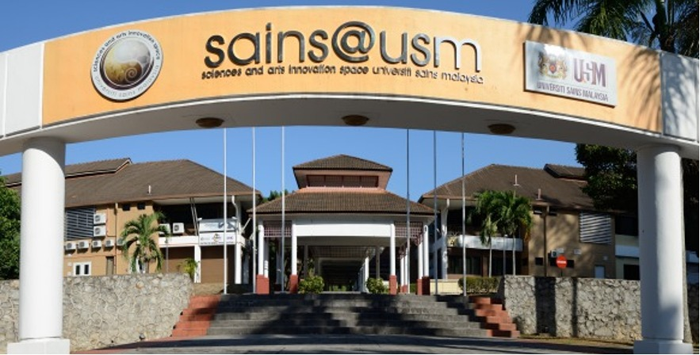
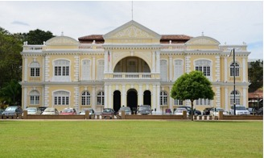
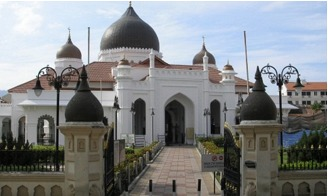
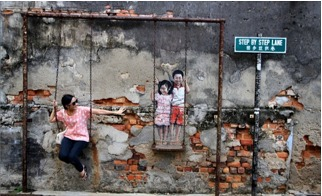

1. Amari SPICE Penang ★★★★★
2 Persiaran Mahsuri, 11900 Bayan Lepas, Pulau Pinang
Phone: +604 683 1188
Distance to venue: 2.4 km
18–20 December 2026, Penang, Malaysia


For USYS 2026




Nearest Airport: Penang International Airport (PEN) — 5.8 km
Nearest Express Bus Terminal: Sungai Nibong Express Bus Terminal — 3.5 km
Nearest Train Station: KTM Station Butterworth — 24.1 km
Hotels listed on the USYS 2026 venue page with distance to venue
2 Persiaran Mahsuri, 11900 Bayan Lepas, Pulau Pinang
Phone: +604 683 1188
Distance to venue: 2.4 km
213, Jalan Bukit Gambir, Bukit Jambul, 11950 Bayan Lepas, Pulau Pinang
Phone: +604 646 8000
Distance to venue: 2.5 km
76, Jalan Mahsuri, 11950 Bayan Lepas, Pulau Pinang
Phone: +604 637 7777
Distance to venue: 2.0 km
676 Jalan Sungai Dua, 11700 Pulau Pinang
Phone: +604-6581000 / +604-6581001
Distance to venue: 3.7 km
No. 7, Jalan Mayang Pasir 2, Bandar Bayan Baru, 11950 Bayan Lepas, Pulau Pinang
Phone: +604 642 9452
Distance to venue: 2.5 km
88 Lintang Bukit Jambul, Bukit Jambul, 11900 Bayan Lepas, Pulau Pinang
Phone: +60 104 011 393
Distance to venue: 1.2 km